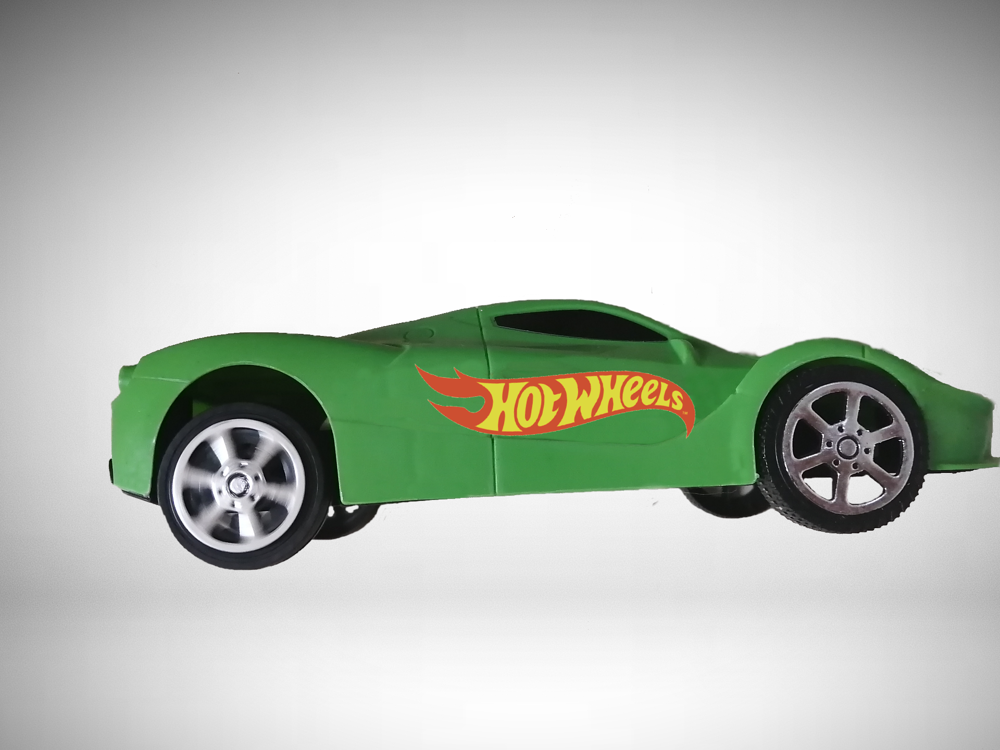
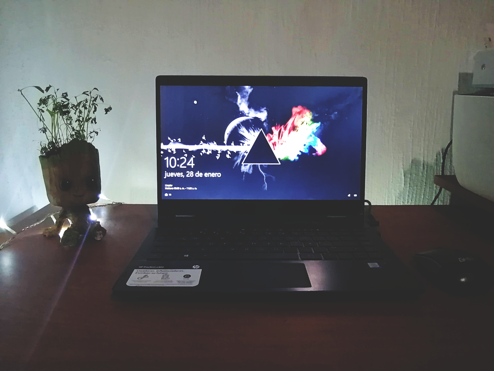
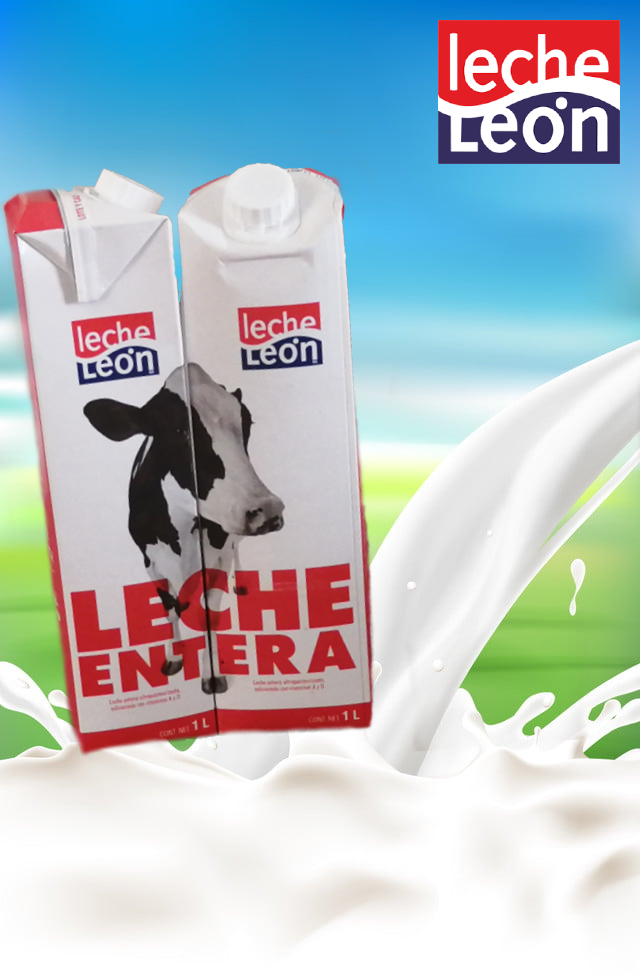
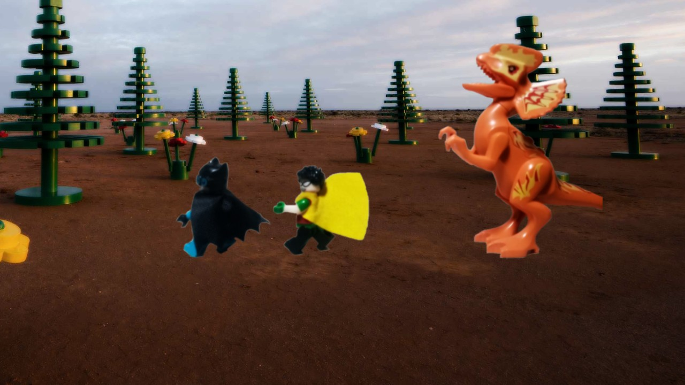
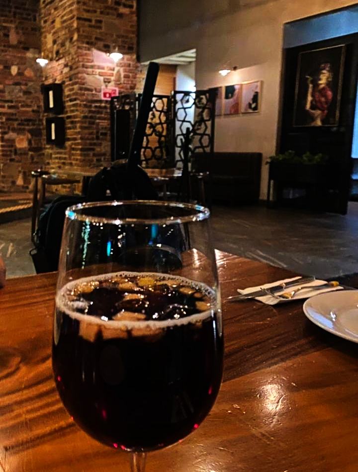

Galery
Algunos proyectos






El modelado de procesos es el estudio de los procesos de negocio con el fin de desarrollar un modelo abstracto sobre el mismo que permita comprender el proceso y comunicarlo con otros.
Read MoreDiagramar es una actividad íntimamente ligada al hecho de modelar un proceso, que es por sí mismo un componente esencial en la gestión de procesos de negocios.
-Wikipedia
Es una expresión abstracta de los procesos principales de una organización. El Modelo de Procesos solamente muestra los procesos principales o macro procesos que a su vez pueden contener otros procesos
Read MoreEs aquel que muestra las relaciones que se establecen entre los procesos, dentro de una organización y define los servicios que un proceso entrega a otro para obtener un bien, un servicio o información, este mapa es útil para identificar que niveles de servicio debe dar cada área a la organización.
Que muestran las secuencias lógicas de actividades que se llevan a cabo entre una o varias áreas de la
organización para la entrega de un bien o un servicio, estas secuencias enlazan normatividad, recursos e
información.
Estos procesos o mapas de procesos de tercer nivel pueden documentarse y constituir la base
para los manuales de organización de algunas empresas que han decidido mejorarse y cambiar de
administraciones funcionales hacia una administración basada en procesos. Los procesos de tercer nivel
tienen un solo responsable, por lo general estos procesos comienzan por una solicitud y terminan con la
entrega de un bien o un servicio.
Cuando un proceso es modelado, con ayuda de una representación gráfica (diagrama de proceso), pueden
apreciarse con facilidad las interrelaciones existentes entre distintas actividades, analizar cada
actividad, definir los puntos de contacto con otros procesos, así como identificar los subprocesos
comprendidos. Al mismo tiempo, los problemas existentes pueden ponerse de manifiesto claramente dando la
oportunidad al inicio de acciones de mejora.
Algunos proyectos